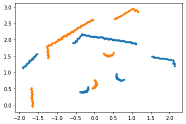
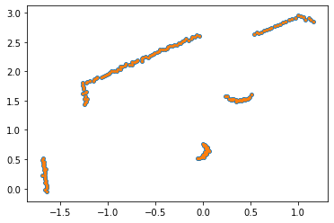
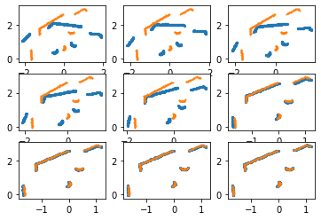
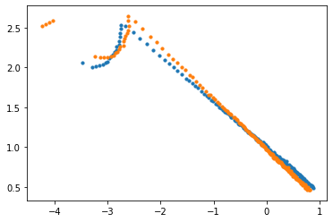
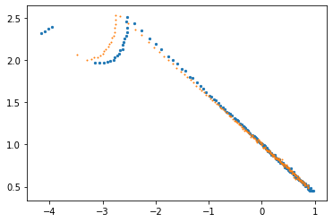
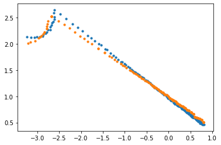
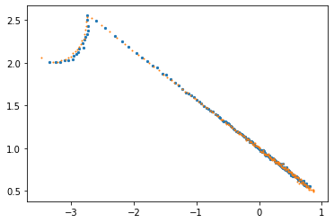

迭代最近点算法 Iterative Closest Point (ICP）可以是点云中经常用于匹配的配准算法，可以求解两组点之间的位姿关系。本文以2D激光雷达为例子，讲解如何使用ICP，并且加入ROS2的仿真中去。
1 | data= array([[-0.32829776, 1.77534997], |
为一个shape=(n, 2)的雷达数据
雷达点的坐标转换
坐标点变换矩阵，绕着原点逆时针旋转
若有一个点$x=(x_0,y_0)$，逆时针旋转$\theta$度，则应该计算为
转换为矩阵为R@x.T即可
因此，坐标变换应该为R@data.T即可，注意结果为shape=(2,n)。
齐次坐标系变换
倘若在旋转的基础之上还需要平移$t=(t_x,t_y)$，则
写为矩阵的形式应该为
因此应该矩阵的乘法，首先需要对数据加一个列的1
1 | data = np.hstack((data, np.ones((test_point.shape[0], 1)))) |
坐标变换应该为T_1@data.T，其中$T_1$为（3）左边的矩阵，注意结果为shape=(3, n)
如果需要计算多次平移和旋转
则只需要继续左乘即可T_2@T_1@data.T
已知对应点关系的ICP
1 | def icp(y_data_pre, y_data_now): |
上面这个函数输入是两个点云，并且shape=(n, 2)
返回的是一个3x3的欧式变换矩阵
$R$是一个二维的旋转矩阵，$t$表示的是平移向量。
下面介绍ICP的具体步骤
步骤一：去中心化
1 | pre_t, now_t = pre_tm - np.mean(pre_tm, axis=0), now_tm - np.mean(now_tm, axis=0) |
步骤二：计算矩阵W
其中，$x_i,p_i$分别代表两块点云中的点。
1 | for i in range(pre_t.shape[0]): |
步骤三：SVD分解，求解R
假设对W的SVD分解结果为
则ICP的解为
1 | U, sigma, V = np.linalg.svd(W) |
步骤四：求解t
其中$u_x$和$u_p$分别表示两块点云的几何中心点
1 | t = np.mean(now_tm, axis=0) - R@np.mean(pre_tm, axis=0).T |
案例
数据生成
下面这段代码，我们生成了已知对应点的两个点云y_data_now以及y_data_pre
y_data_now是通过y_data_pre逆时针旋转45度，并且平移了[0.5, 0.5]得到
1 | import matplotlib.pyplot as plt |
1 | the rotation matrix should be: |
1 | # 画出两点云 |

通过ICP进行相对位姿计算
1 | icp(y_data_pre, y_data_now) |
计算结果为：
array([[ 0.70710679, -0.70710677, 0.5 ],
[ 0.70710677, 0.70710679, 0.5 ],
[ 0. , 0. , 1. ]])
这和我们所预期的结果完全一致。
下面我们画出旋转后的结果
1 | y_data_from_icp = (icp(y_data_pre, y_data_now) @ np.hstack((y_data_pre, np.ones((y_data_pre.shape[0], 1)))).T).T |

未知对应点关系的ICP
对于未知对应点关系的ICP，需要多做一步寻找对应点，由于不知道对应点，我们可以通过迭代的方式逐步去寻找对应点。
我们可以通过KD树来寻找和当前点最近的在其他点云上的点，来作为对应点
具体代码如下
1 | def icpp(y_data_pre, y_data_now): |
使用的方法和上述已知对应点的方法一样。其中我们添加了寻找对应点的函数
1 | def find_correspend_point(y_data_pre, y_data_now): |

我们将每一次匹配之后的结果都画出来，可见ICP矫正匹配的速度还是非常快的
注意：
一，在实际应用ICP算法的过程中，我们需要求的是当前帧到上一帧的位姿变换
举个栗子：
一辆正在缓缓前进的小车，前方有一堵墙。假设小车向前移动了0.5m的距离
那么收集到的前一帧的点云会比较远，后一帧的点云会相对比较近，我们需要求的是距离近的点云到远的点云的位移
因此是我们需要求的是从当前点云到上一帧点云的位姿变换
ROS2 + GAZEBO 仿真代码实例
实例运行：
1 | ros2 launch robot_description gazebo_lab_world.launch.py |
二，迭代次数
1 | theta = 3.1415926 / 3 |
1 | error(icpp(y_data_pre, y_data_now)) |
返回
1 | iters: 33 |
可以通过修改theta和t里面的值，大致都需要30多次的迭代。
但是旋转的角度不可以太大，例如旋转角度为90度的时候，就无力回天了
1 | theta = 3.1415926 / 2 |
三，匹配点对的筛选
当机器人旋转的时候，会出现多个无法匹配的点，比如如下情况

因为在旋转的时候左上角的四个点，按照搜索最近的点无法获得匹配正确的情况，如果按照我们之前所介绍的ICP计算过程，其结果只能达到如下效果

因此在计算匹配点的时候，最近的点需要设立一个阈值，如最近点距离大于0.5就放弃这个点，不再进行匹配，下面对匹配函数进行修改
1 | def find_correspend_point(y_data_pre, y_data_now): |
通过设定阈值，上述的数据为

经过ICP迭代匹配，其结果是令人满意的

对于一次转弯的数据，应用上述的ICP方法，我们可以看见每一帧都对应匹配的还可以

但是当我们把所有的匹配又根据当前的位姿返回到第一帧的时候，就可以看出还是差点意思

ICP 理论推导